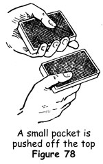
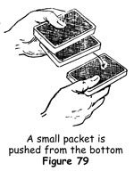
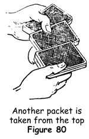
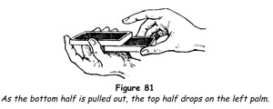
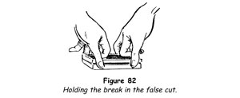

Optical Shuffle
We have already studied one overhand shuffle by means of which the whole pack is kept in a prearranged order while apparently becoming well mixed. The same effect is obtained with the optical shuffle, so called because for deceptiveness it depends upon an optical illusion.
1. Begin an overhand shuffle by undercutting about two-thirds of the deck.
2. Bring the right-hand packet down in front of the packet remaining in the left hand, its lower side striking against the left palm. Raise the left thumb in the usual action of drawing off cards from the right-hand packet, but do not actually remove any; simply slide the thumb over the back of the uppermost card as the right hand lifts its packet away intact.
3. Tilt the left-hand packet back against the left thumb with the left fingers. Drop a packet from the top of those held by the right hand against the face of the left-hand packet.
4. Let the cards in the left hand fall forwards on to the left fingers and repeat the action in step 2.
5. Repeat step 3 and continue until the cards in the right hand are exhausted.
At first thought this pretence of removing cards with the left thumb appears to be too audacious, but when it is smoothly done the illusion is perfect, as a few trials before a mirror will show.
Charlier Shuffle
This shuffle is also called the 'haymow' shuffle. It is unique among card sleights in that neatness of execution is not required; in fact, it is most effective when done rather clumsily. Although expert card handlers affect to disdain it for that reason, the wise operator values it for its effect on laymen, to whom it is the most convincing false shuffle around. The shuffle, though apparently thoroughly mixing the cards, really leaves them in the same condition that a simple complete cut would do.
1. Hold the pack face downwards in the left hand, as for dealing. Push off a small packet, some five or six cards, with the left thumb and take it in the right hand between the thumb on the back and the fingers on the face (figure 78).

2. Raise the left hand slightly and with the left fingers push out a small packet from the bottom of the deck. Take this packet in the right hand on top of the first packet, by lifting the right thumb and then dropping it on top (figure 79).

3. Lower the left hand a little, push off another small packet from the top with the left thumb, and take it with the right fingers underneath the cards in the right hand (figure 80).

4. Push out another small packet from the bottom with the left fingers and take it on top of the cards in the right hand.
5. Continue as above until all the cards have been transferred to the right hand.
As has already been stated, this shuffle leaves the deck in the same condition as it would be after one complete cut. By jogging the first packet from the bottom of the deck - that is, by making it protrude inwards from the packet in the right hand - a break can be formed at the jog at the end of the shuffle, and a single cut will return the pack to its original condition.
This shuffle is especially useful for keeping a small packet of cards in sequence, for which purpose neither the overhand nor the riffle shuffle is suitable.
We would emphasise the need for making the shuffle rather slowly and roughly, with great emphasis on the fact that it mixes (do not use the word shuffle) the cards thoroughly.
The False Cut
It is the invariable rule in games of cards to have the deck cut after it has been shuffled. How far back the custom arose it is impossible to tell, but it is an exhibition of good faith. The magician must prove his good faith by cutting the cards, which he does - but in such a way as not to disturb the arrangement he has already made. In other words, he uses a false cut. False cuts are made in different ways according to whether the whole deck is to remain in the same order or whether a small packet of cards is to remain intact on the top or on the bottom of the deck.
First Method: Retaining the Whole Deck in the Same Order
1. Hold the deck in the left hand, face downwards and near the outer corners, between the third (top) phalanxes of the thumb on one side and of the middle finger on the other. The tip of the forefinger rests against the middle of the outer end, and the ring and little fingers rest free.
2. With the right hand seize the lower half of the deck near the inner corners, between the thumb on one side and the middle finger on the other, the forefinger extended and resting on the back of the top card near the middle of the outer end (figure 81).

3. With a rapid backward and then upward movement of the right hand, pull out the lower half of the deck - the right forefinger sliding on the back of the top card without moving it - and place the packet on the table.
4. With the right hand take the remaining cards in the same way, with the same backward and upward movement, and place them on top of the other packet with a slight snap.
Properly timed - that is to say, when you are addressing some quick remark to a spectator and looking at him - this false cut is undetectable.
Second Method: Retaining the Whole Deck in the Same Order
1. Place the deck on the table and call this position A.
2. Cut off a small packet and place it at B, not far from A. Continue in the same way, cutting packets from A and placing them at C, D, E and F, so they are arranged thus:
A--- B C D E F
3. Pick up packet B and place it on C, pick up BC and place the combined packet on D, and continue in exactly the same way with packets E and F.
4. Leaving packet A, place the rest of the cards in your left hand. Begin to square the deck, then pretend to notice that you have overlooked packet A. Drop all the cards you hold on it, then pick up and square the whole deck.
The action keeps the cards in the same order throughout and is completely deceptive to the uninitiated.
Third Method: Retaining a Small Packet of Cards on the Top of the Deck
1. Hold the deck in the left hand by the sides, near the ends, between the thumb and middle finger near the corners, with the forefinger on the back and the ring and little fingers resting free.
2. With the right thumb and middle finger at the far end, cut off from the top a packet consisting of a few more than the cards to be retained, and place it on the table in front of you.
3. Take hold of the free end of the deck with your right thumb and second finger, and with both hands place the pack on the cut. Let the outer sides of both packets come flush, but hold a break at the inner sides with the left thumb (figure 82).

4. Draw both packets towards you, the action enabling you to get a firm grip of the packets; then lift the whole pack.
5. With the right thumb and second finger draw off small packets from the top, letting them fall to the right, one on top of the other, until you reach the break. Finally take the last cards intact and drop them on top of all the rest.
This is one of the easiest and most deceptive false cuts around.
The whole of the action is done by the thumbs and middle fingers only, the cards being held as openly as possible. An even pace, not a rapid one, should be maintained. The break will be found by the right thumb solely by the sense of touch; there is no need to look at the cards.
Fourth Method: Retaining a Small Packet of Cards on the Bottom of the Deck
1. Hold the deck in the same position as for the third method.
2. With the right thumb and second finger draw off about two-thirds of the pack and place it in front of you.
3. Take hold of the free end of the packet in your left hand, between your right thumb and second finger. Place the packet on top of the cut, the outer sides flush, but holding a break at the rear sides as explained in step 3 of the third method.
4. Draw off the top packet to the break and drop it on the table. Continue drawing off small packets and dropping them one on top of another until the pack is exhausted.
This method of cutting is called a running cut and is in common use among card players. The action should be timed at the same pace as the preceding sleight. It is so well covered that the keenest observation from the front will fail to detect any irregularity.
Palm Cut
Retaining a Small Packet on the Top of the Pack
Let us suppose that you have the four aces on the top of the pack and, having executed the overhand break shuffle and retained the aces in that position, you wish to cut the pack yet keep the aces on the top.
1. Hold the deck in your left hand, as for dealing, and square the ends with the right thumb and fingers. Palm the aces in your right hand by the second method. It is not necessary to take off only the four aces; just make sure that you lift five or six cards in making the necessary break.
2. With the right thumb and fingers cut off about half the deck, and drop the cut in front of you on the table.
3. Bring the right hand back squarely over the remainder of the deck in the left hand; grasp these cards, adding the palmed packet, and drop all on the tabled packet.
Immediately after the palmed packet has been added to the cards in the left hand, it is essential that the forefinger be bent inwards so that its tip rests on the middle of the back of the added packet as seen in figure 62.
TRICKS WITH THE SHUFFLES AND CUTS
An Incomprehensible Divination
This feat is one of the most satisfying in the whole range of card magic. It is easy to perform, utterly baffling to one unfamiliar with its mechanics and has a simple plot that is easily understood.
Before you begin, quietly remove the following cards in sequence, using any suits: A-2-3-4-5-6-7-8-9-10-joker. The ace is the top card, the joker the bottom card.
1. Holding the cards face downwards, you apparently mix the cards well but actually perform the Charlier shuffle. In squaring the cards secretly sight and remember the top card, which let us say is a four.
Tell a spectator that you want him to think of a number between one and ten and that, while you turn your back, you want him to transfer this number of cards, one by one and silently, from the top to the bottom. Illustrate by transferring three cards from top to bottom, which will make the new top card a seven. Subtract this number from twelve, and remember five as your key number.
2. Turn your back as the spectator follows instructions, and when he is finished turn back and take the cards. Spread them and, without seeming to count, run through the packet and cut the card at your key number, the fifth from the top in this case, to be top. Request the spectator to name the number of which he thought, and when he does so turn the top card face upwards and show that its value corresponds to his number.
3. Turn the top card - which let us say is a six - face downwards, and again subtract its value, six, from twelve, arriving at a new key number of six.
'This time I want you to think of a number, and I shall also think of a number,' you remark. 'Take the cards and transfer as many to the bottom, one by one, as the number of which you are thinking.'
4. Turn away until he has completed the transfer; then take the cards saying, 'I am thinking of the number six,' naming whatever key number you arrived at before giving him the cards. Transfer one less than this number to the bottom (five in this case), and turn the sixth card face upwards at the top. It will have the same value as the number of which he thought. Turn the card face downwards and deduct its value from twelve; if the card is a nine, then three will be your new key number.
5. 'Now I shall name a number while you think of one,' you continue. 'Let me see ... well, I'll take the number three,' naming the key number. Turn your back once more as the spectator transfers as many cards to the bottom as the number of which he is thinking. Take the cards, saying, 'I named the number three.' Transfer one less than your key number, in this case two cards, and turn the next card face upwards at the top; its value again corresponds to the number of which he thought.
6. Note the value of this number as before, and deduct it from twelve. If the card is an eight, your new key number will be four. Hand the cards to a spectator, turn away, and have him think of a new number and transfer that number of cards from top to bottom. Turn back and, standing a short distance away, request him to deal cards on to the table. When he has dealt one less than the key number, in this case three cards, request him to stop the deal. 'What is your number?' you ask, and when he has named it, you say, 'Turn up the next card.' He does so and again its value corresponds to that of his number.
Occasionally someone will attempt to confuse you by not transferring any cards. In such a case, when you count down to your key number the joker will be turned up, and you say, 'There's a joker in every pack and there's also a joker in every audience. You're the joker in this case; you didn't think of any number at all,' and the spectator will be forced to admit that this is the case.
When the joker is the top card, consider its value to be eleven, which when deducted from twelve tells you that the next key number will be one, the top card. Take advantage of the circumstance by taking the packet, giving it a little shake, having the spectator name his number, and turning the top card to show that its value corresponds.
Circus Card Trick
In the old days this trick was used by cardsharps to fleece the unwary. It is an amusing swindle for use with a small group when presented as legitimate entertainment.
1. Have someone shuffle the pack, and in taking it back glimpse the bottom card to use as a key card. Spread the cards and ask a spectator to remove one, having him show it to everyone. This is important, for later you may need witnesses.
2. Have the card replaced and place the key card above it by using the key undercut method. Shuffle the pack by means of the key undercut shuffle, which will leave the chosen card and the key card somewhere near the middle. Next have someone make two complete cuts.
3. Take the pack and assert that you can find the spectator's card unfailingly by sense of touch alone. Deal the cards face upwards, watching for your key card. When it falls, the next card dealt is the chosen card. Deal this card, maintaining an impassive expression; remember its name and then deal half a dozen cards more.
4. Finally, push a card off the pack, feel its face with your right index fingertip, hesitate and feel the card again. Glance up triumphantly, tapping the card. 'I'll wager you £5 that the next card I turn over is your card!'
5. Having seen you deal the chosen card, and mistakenly believing that you will turn over the card at the top of those you hold, some people will gleefully accept your wager. You then say, 'My grandfather was right. He said that you should never bet on a sure thing!' Reach out and turn over the chosen card face downwards, thus living up to your promise to turn this card over.
The trick causes a good deal of laughter, and since this was your objective you naturally refuse to permit the loser to pay his debt.
Black Jack, Detective
A chosen card and the jack of clubs, which you introduce as Herlock Sholmes, a detective card, are placed in different parts of the pack. Yet, after several cuts, when the cards are dealt the detective card and the chosen card come out together.
1. Have a card freely selected from a shuffled pack and leave it in the spectator's hands.
2. Run through the pack to find the jack of clubs, and as you do this note and remember the top card, which let us say is the ace of hearts. Remove the jack of clubs and place it to one side.
3. Square the cards and hold them face downwards in the left hand. Using the key undercut, strip out the lower half of the pack with the right hand, and have the chosen card replaced on top of the cards remaining in the left hand, which will place it above the key card, the ace of hearts.
4. Hand the other packet to a second spectator, inviting him to take about half the cards, place them on top of the chosen card and square the cards.
5. Have a third spectator place the jack of clubs on top of these, and then have the remaining cards of the cut placed on top of all.
6. Finally, have a fourth spectator make two complete cuts, which will more or less bring the pack back to about its original order.
7. Holding the pack as for the glide, patter about the marvellous accomplishments of your detective card, the jack of clubs, and order it to find and arrest the chosen card. Deal from the bottom, placing the cards face upwards until you deal the ace of hearts, your key card.
8. Glide back the next card, the chosen card, and continue the deal with the cards above it until the jack of clubs appears. Now draw out the glided card and place if face downwards on the face-upwards jack.
9. Have the chosen card named and then with the jack flick the other card over, showing that your Herlock Sholmes has succeeded in his mission.